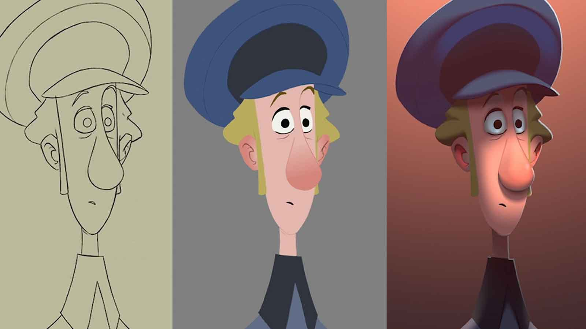
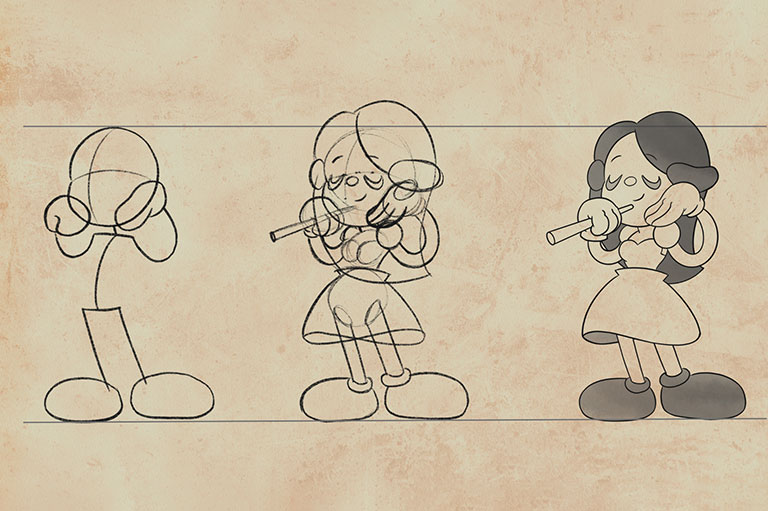
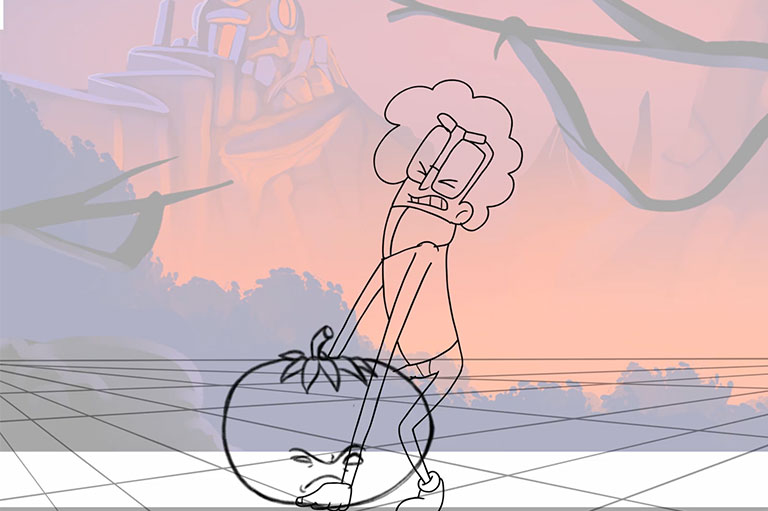
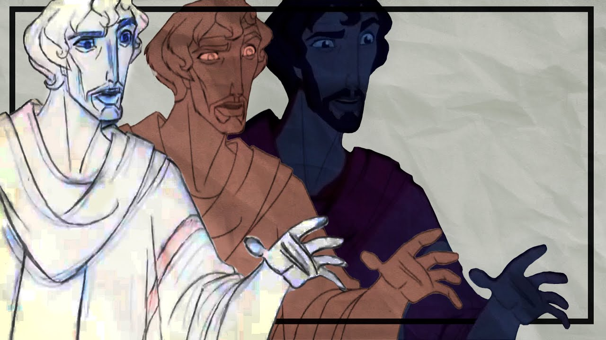
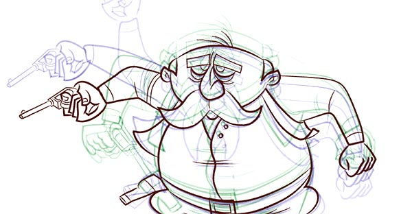
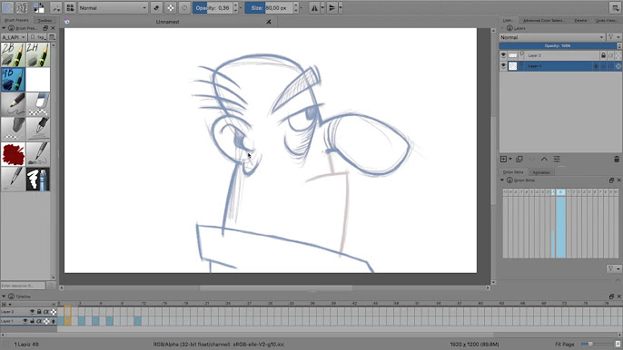
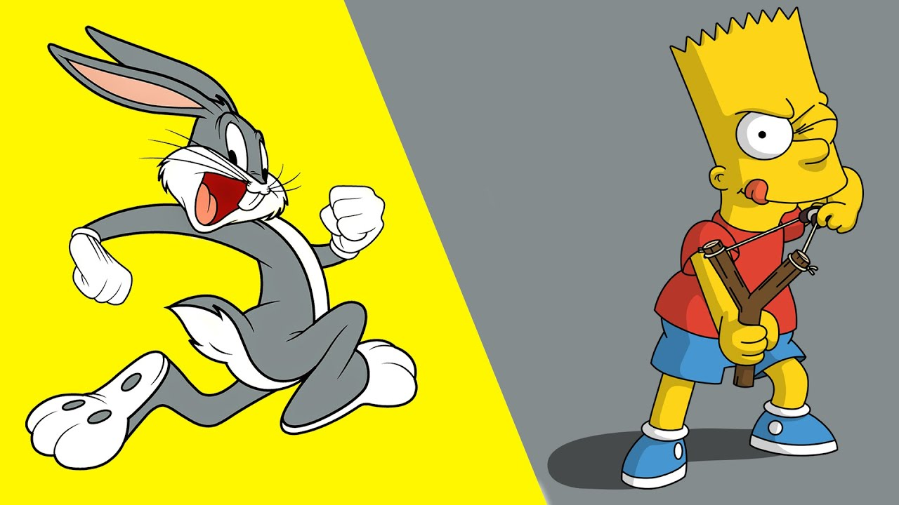
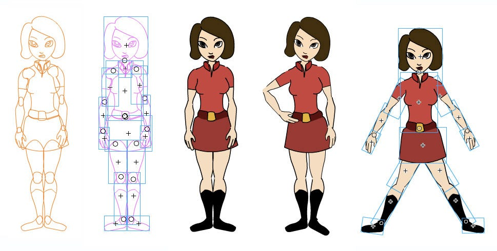

La animación bidimensional o 2D consiste en crear movimientos utilizando imágenes estáticas en dos dimensiones. Mover las imágenes rápidamente en una secuencia crea una ilusión de movimiento, como en una película. Al igual que la animación en 3D, la animación en 2D se utiliza mucho en películas, anuncios, promociones, etc. Aquí tienes un ejemplo de animación en 2D.







